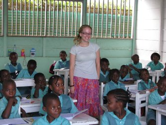
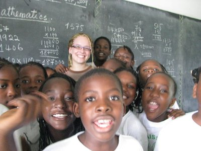

| ACCUEIL |
NOUVELLES |
QUI NOUS SOMMES |
NOTRE TRAVAIL |
NOUS SOUTENIR |
MEDIAS |
PARTENAIRES |
CONTACT |


While her mates were making their first steps as freshmen in University, Emily POULTON was taking a bolder and commendable step. She was leaving her native Canada at the age of 18 to spend 6 months working benevolently in Cameroon for the needy, as a Hope Foundation Volunteer.
Teacher – RENAISSANCE BILINGUAL NURSERY & PRIMARY SCHOOL DOUALA (September 10 to October 09 2009) She started as a primary school teacher for Renaissance Bilingual Nursery & Primary School Douala, where she taught English Language to the pupils of classes 3 and 4. She soon became the favourite among the kids who requested she teaches their classes too. This got Emily to assist teachers who handled other classes so as to make the kids happy. The school was very grateful for her time, her availability and the enthusiasm she put at the service of the kids. The school was 5 minutes walk from her Douala host family; a family in which she blended very well.

Social worker – ORPHELINAT ST JEAN DE DEIDO DOUALA (October 12 to November 14 2009) Emily spent her second month in Cameroon working for an orphanage in Douala. She was at Orphelinat St Jean De Deido de Douala everyday from 9am to 3pm. She took care of the younger orphans who stayed behind while the older ones left for school, which was not in the same vicinity. She played with them, sang with them, fed them, changed their nappies or clothes when they were dirty, etc. She lit the faces of these kids whose ages ranged between 5 months and 4 years with loads of gift she had so thoughtfully brought from Canada. Were it not for the distance between her host family and the orphanage, Emily would have gladly done some evening shifts too
Social worker – CENTER FOR FEMALES WITH DISABILITIES SANTA (CEFED) - BAMENDA (November 19 to December 18 2009) Emily’s third stop was Santa, a locality of the Bamenda neighbourhood, Capital of the North West Region of Cameroon. She travelled about 630km from Douala to work in CEFED, a centre for females with disabilities. It was refreshing to her after 2 months in the hustle-and-bustle of Douala to work and live in rural Cameroon. It was also interesting to see life in the English-speaking region of Cameroon. She worked from 9am to 4pm on weekdays and Saturdays taking care of girls with various types of handicaps. As a staff of the centre, she taught, made sure they ate and had their afternoon nap on time, etc. She is greatly missed by the centre and her Santa host family.

Social worker – THE HIMALAYAN INSTITUTE CAMEROON / KUMBO DEVELOPMENTT ORGANISATION- KUMBO (December 27 2009 to January 29 2010) Emily left the green scenery of Santa to the dusty one of Kumbo to work in the building of a community library in Kumbo, still in the North West Region of Cameroon. The library funded and supervised by The Himalayan Institute Cameroon in collaboration with Kumbo Development Organisation and the BBC. She found this very interesting because unlike her previous assignments, it required she invest herself physically for the good of the community. Emily also spent time in the culturally rich Kumbo learning to cook local dishes like fufu and djama-djama and also to speak the local language, Lamso. It is full of souvenirs that our young and cheerful Hope Foundation Volunteer left the Banso people to spend the remaining 2 weeks she had in Cameroon visiting Yaounde, the capital city of Cameroon.